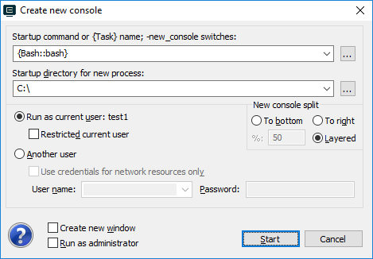

When you run new console the shell is starting in the directory you specified. That is the ‘Startup directory’.

When you work with shell and do some CD's or run your scripts, its ‘Current directory’ may be (and will) changed. But directory is changed inside your Shell but not inside terminal. ConEmu does not handle your shell commands when your execute them. Moreover, some shells (PowerShell, bash, etc.) doesn't even call Window API function ‘SetCurrentDirectory’, they handle their working directories internally.
However, since ConEmu's build 140818 you get full support of ‘Current directory’ (CD).
cmd.exe or tcc.exe; Dir parameter. Just enable ‘Inject ConEmuHk’ feature. ConEmu will maintain CD for you automatically.
You need to tell bash to run "ConEmuC -StoreCWD" command each time its prompt executed. For example, add to your .bashrc
PROMPT_COMMAND='ConEmuC -StoreCWD'
You need to modify your profile to override prompt function. Just run in your PowerShell prompt:
notepad $Profile
And change prompt as in the following example:
function prompt {
# Just prettify the prompt
Write-Host -NoNewline -ForegroundColor Cyan "PS "
$dir = $(get-location).ProviderPath
Write-Host -NoNewline -ForegroundColor Yellow $dir
# You may use ANSI or direct ConEmuC call
# Write-Host -NoNewline (([char]27) + "]9;9;`"" + $dir + "`"" + ([char]27) + "\")
& ConEmuC -StoreCWD "$dir"
return ">"
}